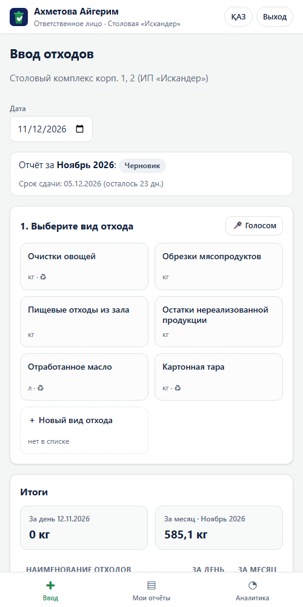
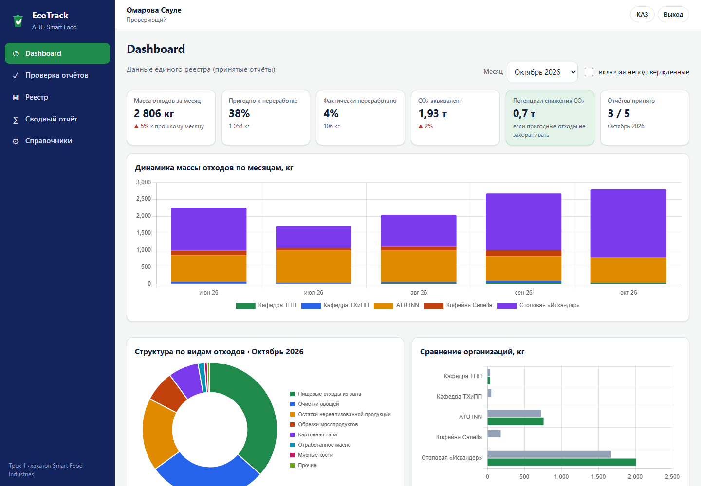

Хакатон ATU «Smart Food Industries» · Трек 1
EcoTrack ATU
Цифровая система управления пищевыми отходами университетского комплекса
Университет кешенінің тағам қалдықтарын басқарудың цифрлық жүйесі
Смартфон + QRПроверка отчётовЕдиный реестрDashboard + CO₂ҚАЗ / РУС
✏️ Команда: «Название команды» — ФИО 1, ФИО 2, ФИО 3
Алматы · 12 ноября 2026
Проблема в цифрах
Отходы считают на бумаге, поэтому ими невозможно управлять
5 организаций АТУ ведут таблицы учёта по одному образцу, но без общей базы, без проверки и без аналитики
≈⅓
мирового продовольствия теряется или выбрасывается
ФАО
8–10%
глобальных выбросов парниковых газов связаны с пищевыми потерями
ООН
40–50%
твёрдых бытовых отходов в Казахстане — пищевые и органические
экспертные оценки
≈36 ч
в месяц уходит в АТУ на ручной учёт, перенос и сведение 5 таблиц
оценка команды, ≈440 взвешиваний/мес
🌍 Экология
Нет учёта переработки и данных для ESG и ЦУР 12.3. Почти всё уходит на полигон, а пригодно к переработке ≈43%.
💸 Финансы
Перерасход на закупку: «остатки нереализованной продукции» не видны руководству вовремя.
⏱ Процесс
Ручное сведение, ошибки и пропуски, нет контроля сроков и того, кто не сдал отчёт.
Аналоги и их ограничения
Готовые решения не подходят университетскому кампусу
Нужен простой учёт с документооборотом в стандартах АТУ, а не дорогая «умная кухня»
| Решение | Что умеет | Ограничения для АТУ |
|---|
| Winnow, Orbisk (Великобритания, Нидерланды) | ИИ-камера над баком, распознавание отходов | Дорогое оборудование и подписка в валюте; только кухня; нет сдачи отчётов организаций |
| Leanpath (США) | Весы и планшет, аналитика потерь | Нет казахского и русского; нет форм АТУ и проверки отчётов; недоступно в РК |
| Excel / Google Forms | Бесплатно, привычно | Нет ролей, статусов, блокировки, истории и контроля несдавших; сведение вручную |
| Бумажный журнал (сейчас) | Ничего не нужно настраивать | Нет аналитики и CO₂; ошибки при переносе; месяцы задержки |
| EcoTrack ATU | Формы по образцам АТУ, workflow, реестр, свод, dashboard, CO₂ | Работает на любом смартфоне; ҚАЗ/РУС; бесплатный хостинг; готово к подключению весов (Трек 2) |
Решение и ценность
Полный цикл: от взвешивания до квартального отчёта
📱 QR → форма организации
→
⚖️ Вес за 3 касания
(или голосом)
→
✅ Автопроверка
и итоги дня и месяца
→
📤 Отправка отчёта
одним действием
→
🔍 Принять или вернуть
с комментарием
→
📊 Реестр · свод · Excel · CO₂
Ответственному лицу
- ≤30 секунд на запись
- черновик не теряется
- фото и новый вид отхода
Проверяющему
- очередь на проверку
- история: кто, когда, что
- список несдавших и напоминание
Руководству
- 5 графиков
- отклонения больше N %
- рекомендации по сокращению
Администратору
- новая организация без программиста
- справочники и роли
- QR-коды для печати
Технология и демо MVP
Работающий MVP: PWA + API с проверкой ролей


Стек
PWA (HTML/CSS/JS, офлайн) + облако Supabase (PostgreSQL): смартфон и ноутбук синхронизируются за ~4 с. Chart.js, SheetJS, QR, голосовой ввод
Безопасность
Роли проверяются в слое API, пароли хранятся как солёный SHA-256; для пилота готова схема с RLS по ролям
Данные
7 сущностей (ER в репозитории), ≈2 300 демо-записей, 5 организаций, июнь–ноябрь
Бизнес-процесс
«Как есть» → «как будет»: −86 % трудозатрат
5 организаций, ≈440 взвешиваний в месяц
Как есть
Взвесил → записал в журнал
1,5 мин
→
Конец месяца: перенос в Excel
2 ч × 5
→
Отправка по почте, поиск ошибок
≈12 ч
→
Квартальный свод вручную
≈3 ч
Как будет
QR → плитка → вес
0,5 мин
→
Итоги и проверка — автоматически
0 ч
→
Принять или вернуть
15 мин × 5
→
Свод и Excel — 1 клик
≈0,2 ч
| Часов в месяц | Запись | Перенос | Сведение и проверка | Отчёты | Итого |
|---|
| Как есть | 11 | 10 | 12 | 3 | 36 |
| Как будет | 3,7 | 0 | 1,3 | 0,2 | 5,2 |
Бизнес-модель
Пилот в АТУ, затем SaaS для вузов Казахстана
👥 Клиенты
- Вузы и колледжи РК (кампусы, столовые, лаборатории)
- Члены «Союза пищевых предприятий Казахстана»: кейтеринг, столовые, производства
💳 Монетизация
- Подписка 300–500 тыс. ₸ в год за кампус (до 10 организаций)
- Внедрение и обучение — разово
- Модуль весов (Трек 2) и ESG-отчёт — опции
🎯 Ценность
- Экономия часов и сырья
- Данные для ESG, ЦУР 12.3 и требований законодательства РК
- Прозрачность для руководства
1
кампус — пилот АТУ, 2026–2027
15
вузов за 2 года через СППК и сеть вузов
≈6 млн ₸
годовой выручки при 15 подписках
Экономический эффект (пилот АТУ)
Окупаемость ≈4 месяца
| Эффект в год | ₸ |
|---|
| Экономия труда: 370 ч × 2 500 ₸/ч | 920 000 |
| Сырьё: −20 % нереализованной продукции (60 кг/мес × 1 500 ₸) | 1 080 000 |
| OPEX: хостинг БД + 0,1 ставки сопровождения | −516 000 |
| Чистый эффект | ≈1 500 000 |
| CAPEX (разово) | ₸ |
|---|
| Облачная БД, перенос справочников | 150 000 |
| 2 планшета для кухонь (опционально) | 240 000 |
| QR-коды, обучение 10 сотрудников | 60 000 |
| Итого CAPEX | 450 000 |
Окупаемость: 450 тыс. ₸ ÷ 1,5 млн ₸/год ≈ 3,6 мес.
Сам MVP (код) уже создан и бесплатен в хостинге.
Допущения команды: ставка 2 500 ₸/ч с налогами; себестоимость 1 500 ₸/кг; объём нереализованной продукции оценён по демо-данным, построенным по образцам таблиц АТУ. На пилоте их нужно уточнить.
Экологический эффект · ЦУР 12.3 / 12.5
−13 т отходов на полигон и ≈−9 т CO₂-экв. в год
≈30 т
пищевых отходов в год (5 организаций)
43%
пригодно к переработке, а сейчас перерабатывается ≈3%
≈21 т
CO₂-экв. в год сейчас
≈53 тыс.
км пробега авто — эквивалент сокращения
Что даёт система
- CO₂ по каждой записи с учётом способа утилизации
- «Потенциал снижения»: сколько CO₂ уходит с пригодными отходами
- Рекомендации: картон — в макулатуру, очистки и кофейный жмых — в компост, масло — на биотопливо
Методика
Коэффициенты UK DESNZ/DEFRA GHG Conversion Factors 2024 (Waste disposal): пищевые на полигоне ≈0,70 кг CO₂-экв./кг, картон ≈1,04, переработка или компост ≈0,01. Коэффициенты редактируются в справочнике.
План внедрения
От одной столовой — ко всем вузам
Сегодня
MVPПолный цикл, 5 организаций, демо-данные
1–2 мес
ПилотСтоловая «Искандер»: облачная БД, QR на кухне, обучение
3–6 мес
Весь АТУ5 организаций, буфеты, лаборатории; Telegram-напоминания; импорт Excel
6–9 мес
Весы и ИИAPI для электронных весов (Трек 2), распознавание отхода по фото
9–24 мес
Другие вузыSaaS и мультиарендность, продажи через СППК
Ресурсы
1 разработчик на пилоте, ответственный проверяющий от АТУ, 0,1 ставки сопровождения
Риски
Сопротивление персонала; неполные данные; нет интернета на кухне
Меры
3 касания и голосовой ввод; контроль несдавших и сроков; офлайн-режим PWA
Команда и запрос
Готовы к пилоту в АТУ
✏️ ФИО 1 — капитан, продукт и презентация
✏️ ФИО 2 — разработка
✏️ ФИО 3 — аналитика, экономика, экология
Наш запрос:
- Пилот в столовой «Искандер» на 2 месяца
- Ответственный проверяющий от АТУ
- Доступ к реальным таблицам учёта
- Партнёр по электронным весам (Трек 2)
Демо: https://sabithanov.github.io/ecotrack-atu/ · Код: https://github.com/sabithanov/ecotrack-atu
Логины: iskander@atu.kz · reviewer@atu.kz · admin@atu.kz — пароль demo123